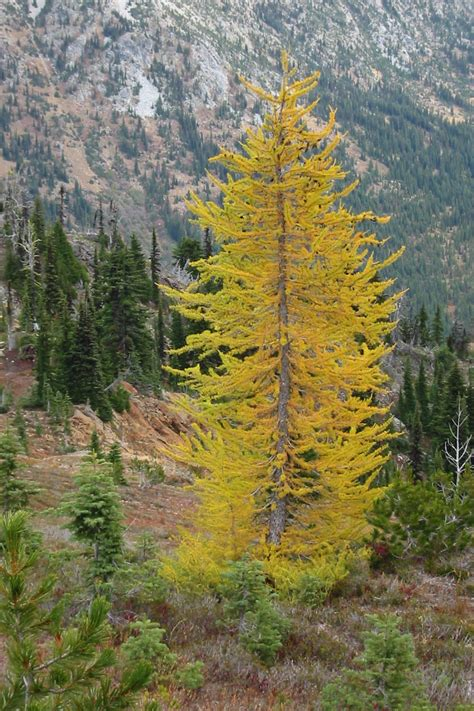

“The Larch!” - A famous line from Monty Python's "The Holy Grail".

The Larch is a tree that is often overlooked, but it has a special place in the hearts of Monty Python fans. Known for its unique characteristics, the Larch is a deciduous conifer that sheds its needles in the fall.
| Image | Description |
|---|---|

|
European Larch A classic mountain larch. Deciduous needles make it a conifer oddball, which is very on-brand. |

|
Japanese Larch Elegant form, soft needles, and unmistakable “The Larch!” energy. |

|
Tamarack (American Larch) Native to North America; hardy, bog-friendly, and unreasonably majestic. |

In the world of Monty Python, the Larch represents absurdity and whimsy. It reminds us to appreciate the little things in life, even if they are just trees.
Visitor Counter: 0001337
Best viewed in 800x600 on Netscape Navigator

| The Totally Serious Larch Web Ring | ||
|---|---|---|
| << Prev Larch | Random Larch | Next Larch >> |